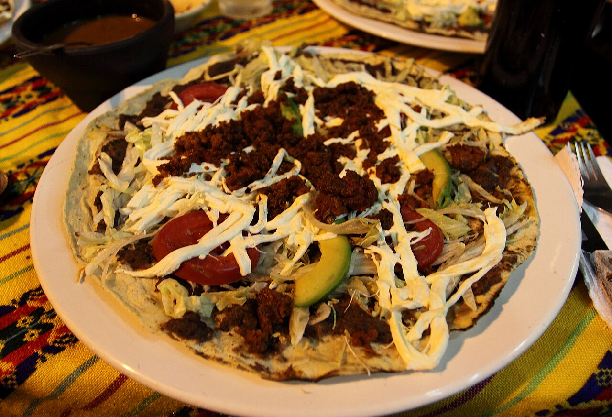

Generational Culinary Roots
Our recipes were not learned in culinary schools—they were passed down across generations in Oaxacan homes. We follow the exact steps of our grandmothers, honoring the patience and discipline true Oaxacan cooking demands.
For years, our family has had the privilege of feeding Charlotte through Tacos El Nevado. But deep within our culinary souls lived a dream: to build a dedicated home for the rare, time-honored dishes of our native Oaxaca. Opened in May 2026 at 3654 Central Avenue, Sabores de Oaxaca is the realization of that lifelong family tribute.

Guided by generational family recipes, native ingredients, and authentic East Charlotte hospitality.
Our recipes were not learned in culinary schools—they were passed down across generations in Oaxacan homes. We follow the exact steps of our grandmothers, honoring the patience and discipline true Oaxacan cooking demands.
True tlayudas and moles cannot be made with standard supermarket ingredients. We source authentic quesillo, dried avocado leaves, and authentic Oaxacan chilies directly from trusted producers in Oaxaca.
East Charlotte's Central Avenue is the vibrant multicultural dining capital of the Queen City. We are proud to contribute a landmark destination that represents authentic Mexican culture to our neighbors.
Whether you grew up in the Central Valleys of Oaxaca craving the familiar crunch of a tlayuda with tasajo, or you are a Charlotte food lover eager to discover real mole negro and stone-ground hot chocolate, Sabores de Oaxaca welcomes you with open arms and uncompromised food.
Find Directions →